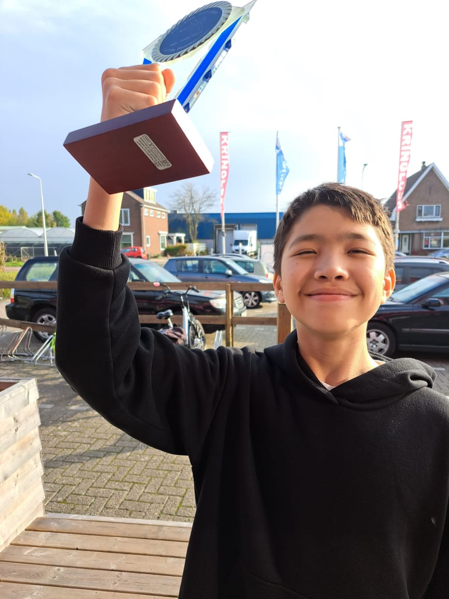
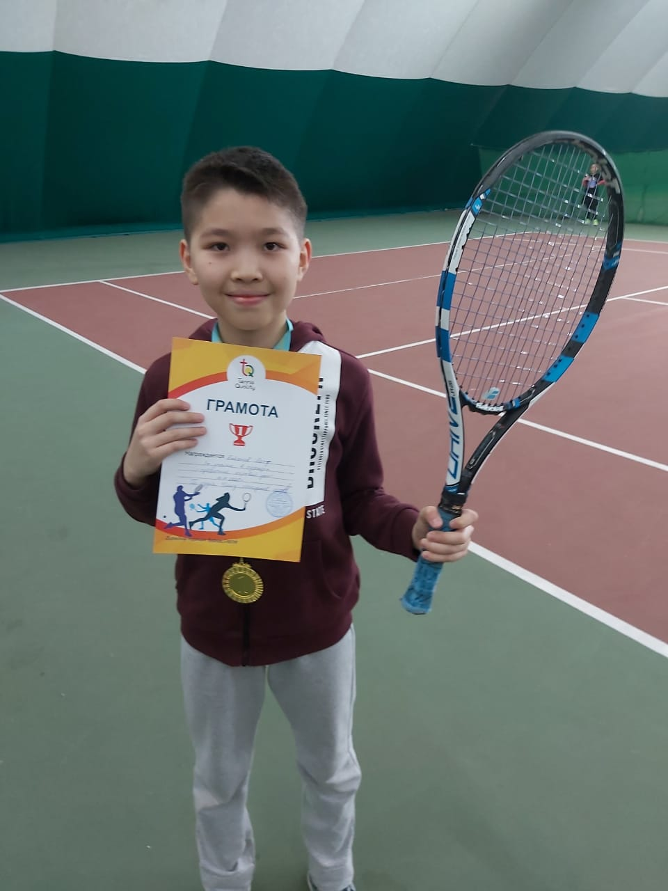
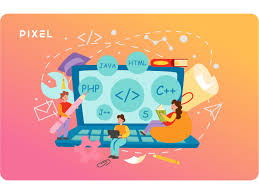
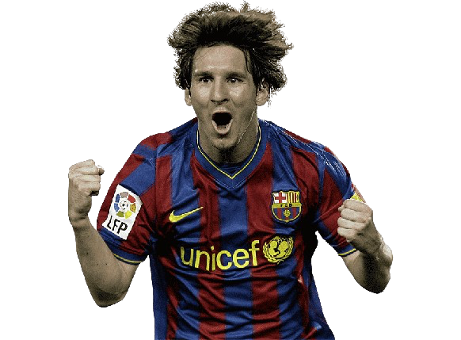
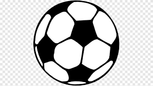
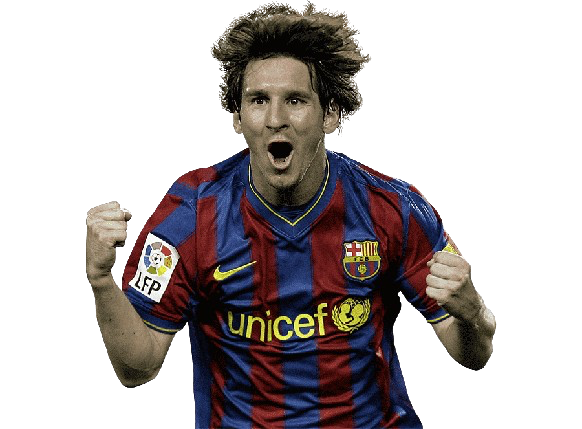
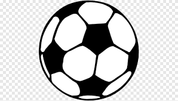

Портфолио


Что касается моего портфолио, то я раньше занимался теннисом , так что у меня есть некоторые достижения.
Здесь изображены фотки моей первой и последней победы, и как можно заметить, между ними довольно большая разница, так что выигрывал не мало.

Также я занимаюсь программированием, на языке Python.Участвую на хакатонах, выигрываю их , и мне это нравится.
Фотодоказательств к сожалению не будет, так как при переезде они остались в старой квартире. Но 1 мая начинается новый хакатон, и если я его выиграю,
то обязательно дополню этот сайт.
Также я веду свой блог на Медиум.Там есть несколько статей про сортировку на с++, но основная тема моего блога - самолеты.
Кстати , скоро напишу новую статью , так что на всякий случай оставлю здесь ссылку на блог:
https://medium.com/@asset.babenov26
 


